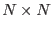
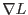

The vector of amplitudes
which minimizes  is approximated by a Newtonian method in
is approximated by a Newtonian method in  dimensions. In this method, the formula
dimensions. In this method, the formula
where is an  matrix of curvature terms given by
is iteratively inverted until it is judged to have converged.
 and can be expressed in closed form as